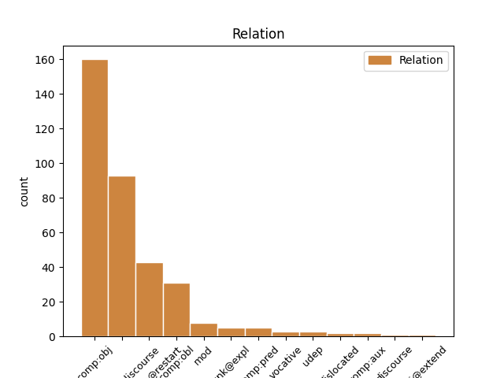

Distribution of features within this leaf

Agreement Rules sorted by frequency.
- When the dependent token is the direct object complements(comp:obj) of the head token, and the head token is VERB and the dependent token is PRON.
1 [gap] _ _ _ _ 0 _ _ _
2 ga on PRON Pp3msa--y Case=Acc|Gender=Masc|Number=Sing|Person=3|PronType=Prs|Variant=Short 3 comp:obj _ msd=Zotmet--k|word=ga
3 ima imeti VERB Vmpr3s-n Aspect=Imp|Mood=Ind|Number=Sing|Person=3|Polarity=Pos|Tense=Pres|VerbForm=Fin 0 _ _ _
4 takrat _ _ _ _ 0 _ _ _
5 [speaker:laughter] _ _ _ _ 0 _ _ _
1 ja _ _ _ _ 0 _ _ _
2 kompleksna _ _ _ _ 0 _ _ _
3 so _ _ _ _ 0 _ _ _
4 eee _ _ _ _ 0 _ _ _
5 mislim misliti VERB Vmpr1s Aspect=Imp|Mood=Ind|Number=Sing|Person=1|Tense=Pres|VerbForm=Fin 9 parataxis@discourse _ msd=Ggnspe|word=mism
6 temeljna _ _ _ _ 0 _ _ _
7 seveda _ _ _ _ 0 _ _ _
8 lahko _ _ _ _ 0 _ _ _
9 pokažemo pokazati VERB Vmer1p Aspect=Perf|Mood=Ind|Number=Plur|Person=1|Tense=Pres|VerbForm=Fin 0 _ _ _
10 že _ _ _ _ 0 _ _ _
11 z _ _ _ _ 0 _ _ _
12 obrazno _ _ _ _ 0 _ _ _
13 mimiko _ _ _ _ 0 _ _ _
1 aha _ _ _ _ 0 _ _ _
2 kul _ _ _ _ 0 _ _ _
3 eee _ _ _ _ 0 _ _ _
4 čakaj čakati VERB Vmpm2s Aspect=Imp|Mood=Imp|Number=Sing|Person=2|VerbForm=Fin 0 _ _ _
5 še _ _ _ _ 0 _ _ _
6 kako _ _ _ _ 0 _ _ _
7 vprašanje _ _ _ _ 0 _ _ _
8 eee _ _ _ _ 0 _ _ _
9 to _ _ _ _ 0 _ _ _
10 pa _ _ _ _ 0 _ _ _
11 eee _ _ _ _ 0 _ _ _
12 če _ _ _ _ 0 _ _ _
13 če _ _ _ _ 0 _ _ _
14 nabavim _ _ _ _ 0 _ _ _
15 to _ _ _ _ 0 _ _ _
16 imate imeti VERB Vmpr2p-n Aspect=Imp|Mood=Ind|Number=Plur|Person=2|Polarity=Pos|Tense=Pres|VerbForm=Fin 4 parataxis@restart _ msd=Ggnsdm-n|word=mate
17 k _ _ _ _ 0 _ _ _
18 [gap] _ _ _ _ 0 _ _ _
19 kako _ _ _ _ 0 _ _ _
20 je _ _ _ _ 0 _ _ _
21 tako _ _ _ _ 0 _ _ _
22 zdaj _ _ _ _ 0 _ _ _
23 ena _ _ _ _ 0 _ _ _
24 cena _ _ _ _ 0 _ _ _
25 za _ _ _ _ 0 _ _ _
26 en _ _ _ _ 0 _ _ _
27 mesec _ _ _ _ 0 _ _ _
28 če _ _ _ _ 0 _ _ _
29 bi _ _ _ _ 0 _ _ _
30 jaz _ _ _ _ 0 _ _ _
31 to _ _ _ _ 0 _ _ _
32 hotel _ _ _ _ 0 _ _ _
33 pač _ _ _ _ 0 _ _ _
34 en _ _ _ _ 0 _ _ _
35 mesec _ _ _ _ 0 _ _ _
36 hotel _ _ _ _ 0 _ _ _
37 to _ _ _ _ 0 _ _ _
38 jest _ _ _ _ 0 _ _ _
39 ? _ _ _ _ 0 _ _ _
1 km _ _ _ _ 0 _ _ _
2 [gap] _ _ _ _ 0 _ _ _
3 ker _ _ _ _ 0 _ _ _
4 ti _ _ _ _ 0 _ _ _
5 na _ _ _ _ 0 _ _ _
6 vizi _ _ _ _ 0 _ _ _
7 piše pisati VERB Vmpr3s Aspect=Imp|Mood=Ind|Number=Sing|Person=3|Tense=Pres|VerbForm=Fin 0 _ _ _
8 od _ _ _ _ 0 _ _ _
9 kdaj _ _ _ _ 0 _ _ _
10 do _ _ _ _ 0 _ _ _
11 kdaj _ _ _ _ 0 _ _ _
12 ti _ _ _ _ 0 _ _ _
13 velja veljati VERB Vmpr3s Aspect=Imp|Mood=Ind|Number=Sing|Person=3|Tense=Pres|VerbForm=Fin 7 comp:obj _ msd=Ggnste|word=vela
1 eee _ _ _ _ 0 _ _ _
2 o _ _ _ _ 0 _ _ _
3 [gap] _ _ _ _ 0 _ _ _
4 eee _ _ _ _ 0 _ _ _
5 italijani _ _ _ _ 0 _ _ _
6 imajo _ _ _ _ 0 _ _ _
7 to _ _ _ _ 0 _ _ _
8 dobro _ _ _ _ 0 _ _ _
9 narejeno _ _ _ _ 0 _ _ _
10 oni _ _ _ _ 0 _ _ _
11 imajo imeti VERB Vmpr3p-n Aspect=Imp|Mood=Ind|Number=Plur|Person=3|Polarity=Pos|Tense=Pres|VerbForm=Fin 0 _ _ _
12 vse _ _ _ _ 0 _ _ _
13 proge _ _ _ _ 0 _ _ _
14 ko _ _ _ _ 0 _ _ _
15 ti _ _ _ _ 0 _ _ _
16 prideš _ _ _ _ 0 _ _ _
17 ko _ _ _ _ 0 _ _ _
18 si _ _ _ _ 0 _ _ _
19 kupiš _ _ _ _ 0 _ _ _
20 smučarsko _ _ _ _ 0 _ _ _
21 karto _ _ _ _ 0 _ _ _
22 ne _ _ _ _ 0 _ _ _
23 je biti AUX Va-r3s-n Mood=Ind|Number=Sing|Person=3|Polarity=Pos|Tense=Pres|VerbForm=Fin 11 parataxis@restart _ msd=Gp-ste-n|word=je
24 to _ _ _ _ 0 _ _ _
25 vse _ _ _ _ 0 _ _ _
26 s _ _ _ _ 0 _ _ _
27 številkami _ _ _ _ 0 _ _ _
28 označeno _ _ _ _ 0 _ _ _
1 čakaj _ _ _ _ 0 _ _ _
2 mp3 _ _ _ _ 0 _ _ _
3 je biti AUX Va-r3s-n Mood=Ind|Number=Sing|Person=3|Polarity=Pos|Tense=Pres|VerbForm=Fin 0 _ _ _
4 meni _ _ _ _ 0 _ _ _
5 se _ _ _ _ 0 _ _ _
6 zdi zdeti VERB Vmpr3s Aspect=Imp|Mood=Ind|Number=Sing|Person=3|Tense=Pres|VerbForm=Fin 3 parataxis@discourse _ msd=Ggnste|word=zdi
1 recimo _ _ _ _ 0 _ _ _
2 eee _ _ _ _ 0 _ _ _
3 eee _ _ _ _ 0 _ _ _
4 povejte povedati VERB Vmem2p Aspect=Perf|Mood=Imp|Number=Plur|Person=2|VerbForm=Fin 0 _ _ _
5 mi _ _ _ _ 0 _ _ _
6 kaj _ _ _ _ 0 _ _ _
7 v _ _ _ _ 0 _ _ _
8 recimo _ _ _ _ 0 _ _ _
9 kako _ _ _ _ 0 _ _ _
10 ste biti AUX Va-r2p-n Mood=Ind|Number=Plur|Person=2|Polarity=Pos|Tense=Pres|VerbForm=Fin 4 comp:obj _ msd=Gp-sdm-n|word=ste
11 izmerili _ _ _ _ 0 _ _ _
12 vse _ _ _ _ 0 _ _ _
13 te _ _ _ _ 0 _ _ _
14 zadeve _ _ _ _ 0 _ _ _
15 za _ _ _ _ 0 _ _ _
16 prvi _ _ _ _ 0 _ _ _
17 vzorec _ _ _ _ 0 _ _ _
1 ja _ _ _ _ 0 _ _ _
2 jaz _ _ _ _ 0 _ _ _
3 sem biti AUX Va-r1s-n Mood=Ind|Number=Sing|Person=1|Polarity=Pos|Tense=Pres|VerbForm=Fin 0 _ _ _
4 pa _ _ _ _ 0 _ _ _
5 ugotovil _ _ _ _ 0 _ _ _
6 ko _ _ _ _ 0 _ _ _
7 smo _ _ _ _ 0 _ _ _
8 dobili _ _ _ _ 0 _ _ _
9 teste _ _ _ _ 0 _ _ _
10 od _ _ _ _ 0 _ _ _
11 matematike _ _ _ _ 0 _ _ _
12 nazaj _ _ _ _ 0 _ _ _
13 in _ _ _ _ 0 _ _ _
14 pol _ _ _ _ 0 _ _ _
15 sem _ _ _ _ 0 _ _ _
16 imel _ _ _ _ 0 _ _ _
17 pač _ _ _ _ 0 _ _ _
18 bolj _ _ _ _ 0 _ _ _
19 slabo _ _ _ _ 0 _ _ _
20 štirico _ _ _ _ 0 _ _ _
21 sem biti AUX Va-r1s-n Mood=Ind|Number=Sing|Person=1|Polarity=Pos|Tense=Pres|VerbForm=Fin 3 parataxis@restart _ msd=Gp-spe-n|word=sem
22 pisal _ _ _ _ 0 _ _ _
23 eee _ _ _ _ 0 _ _ _
24 in _ _ _ _ 0 _ _ _
25 pol _ _ _ _ 0 _ _ _
26 mi _ _ _ _ 0 _ _ _
27 je _ _ _ _ 0 _ _ _
28 [name:personal] _ _ _ _ 0 _ _ _
29 pomagal _ _ _ _ 0 _ _ _
30 iskati _ _ _ _ 0 _ _ _
31 točke _ _ _ _ 0 _ _ _
1 eem _ _ _ _ 0 _ _ _
2 dobro _ _ _ _ 0 _ _ _
3 tekmuje _ _ _ _ 0 _ _ _
4 tudi _ _ _ _ 0 _ _ _
5 v _ _ _ _ 0 _ _ _
6 slalomu _ _ _ _ 0 _ _ _
7 kar _ _ _ _ 0 _ _ _
8 ji on PRON Pp3fsd--y Case=Dat|Gender=Fem|Number=Sing|Person=3|PronType=Prs|Variant=Short 12 comp:obl _ msd=Zotzed--k|word=ji
9 pač _ _ _ _ 0 _ _ _
10 s _ _ _ _ 0 _ _ _
11 tem _ _ _ _ 0 _ _ _
12 omogoča omogočati VERB Vmpr3s Aspect=Imp|Mood=Ind|Number=Sing|Person=3|Tense=Pres|VerbForm=Fin 0 _ _ _
13 da _ _ _ _ 0 _ _ _
14 osvaja _ _ _ _ 0 _ _ _
15 točke _ _ _ _ 0 _ _ _
16 še _ _ _ _ 0 _ _ _
17 v _ _ _ _ 0 _ _ _
18 dveh _ _ _ _ 0 _ _ _
19 drugih _ _ _ _ 0 _ _ _
20 disciplinah _ _ _ _ 0 _ _ _
21 eee _ _ _ _ 0 _ _ _
22 na _ _ _ _ 0 _ _ _
23 najvišjem _ _ _ _ 0 _ _ _
24 nivoju _ _ _ _ 0 _ _ _
1 eem _ _ _ _ 0 _ _ _
2 dobro _ _ _ _ 0 _ _ _
3 tekmuje tekmovati VERB Vmpr3s Aspect=Imp|Mood=Ind|Number=Sing|Person=3|Tense=Pres|VerbForm=Fin 0 _ _ _
4 tudi _ _ _ _ 0 _ _ _
5 v _ _ _ _ 0 _ _ _
6 slalomu _ _ _ _ 0 _ _ _
7 kar _ _ _ _ 0 _ _ _
8 ji _ _ _ _ 0 _ _ _
9 pač _ _ _ _ 0 _ _ _
10 s _ _ _ _ 0 _ _ _
11 tem _ _ _ _ 0 _ _ _
12 omogoča omogočati VERB Vmpr3s Aspect=Imp|Mood=Ind|Number=Sing|Person=3|Tense=Pres|VerbForm=Fin 3 mod _ msd=Ggnste|word=omogoča
13 da _ _ _ _ 0 _ _ _
14 osvaja _ _ _ _ 0 _ _ _
15 točke _ _ _ _ 0 _ _ _
16 še _ _ _ _ 0 _ _ _
17 v _ _ _ _ 0 _ _ _
18 dveh _ _ _ _ 0 _ _ _
19 drugih _ _ _ _ 0 _ _ _
20 disciplinah _ _ _ _ 0 _ _ _
21 eee _ _ _ _ 0 _ _ _
22 na _ _ _ _ 0 _ _ _
23 najvišjem _ _ _ _ 0 _ _ _
24 nivoju _ _ _ _ 0 _ _ _
1 nekega _ _ _ _ 0 _ _ _
2 dne _ _ _ _ 0 _ _ _
3 mislim _ _ _ _ 0 _ _ _
4 da _ _ _ _ 0 _ _ _
5 je _ _ _ _ 0 _ _ _
6 bilo _ _ _ _ 0 _ _ _
7 to _ _ _ _ 0 _ _ _
8 v _ _ _ _ 0 _ _ _
9 četrtem _ _ _ _ 0 _ _ _
10 razredu _ _ _ _ 0 _ _ _
11 sem biti AUX Va-r1s-n Mood=Ind|Number=Sing|Person=1|Polarity=Pos|Tense=Pres|VerbForm=Fin 0 _ _ _
12 se _ _ _ _ 0 _ _ _
13 eee _ _ _ _ 0 _ _ _
14 s _ _ _ _ 0 _ _ _
15 [gap] _ _ _ _ 0 _ _ _
16 sem biti AUX Va-r1s-n Mood=Ind|Number=Sing|Person=1|Polarity=Pos|Tense=Pres|VerbForm=Fin 11 comp:aux _ msd=Gp-spe-n|word=sem
17 se _ _ _ _ 0 _ _ _
18 skregal _ _ _ _ 0 _ _ _
19 z _ _ _ _ 0 _ _ _
20 vsemi _ _ _ _ 0 _ _ _
21 svojimi _ _ _ _ 0 _ _ _
22 prijatelji _ _ _ _ 0 _ _ _
1 mi _ _ _ _ 0 _ _ _
2 recimo _ _ _ _ 0 _ _ _
3 doma _ _ _ _ 0 _ _ _
4 mi jaz PRON Pp1mpn Case=Nom|Gender=Masc|Number=Plur|Person=1|PronType=Prs 0 _ _ _
5 recimo reči VERB Vmem1p Aspect=Perf|Mood=Imp|Number=Plur|Person=1|VerbForm=Fin 4 parataxis@discourse _ msd=Ggdvpm|word=recimo
6 doma _ _ _ _ 0 _ _ _
7 tule _ _ _ _ 0 _ _ _
8 je _ _ _ _ 0 _ _ _
9 moja _ _ _ _ 0 _ _ _
10 eee _ _ _ _ 0 _ _ _
11 edina _ _ _ _ 0 _ _ _
12 žena _ _ _ _ 0 _ _ _
13 tule _ _ _ _ 0 _ _ _
14 je _ _ _ _ 0 _ _ _
15 moj _ _ _ _ 0 _ _ _
16 edini _ _ _ _ 0 _ _ _
17 sin _ _ _ _ 0 _ _ _
1 tako _ _ _ _ 0 _ _ _
2 da _ _ _ _ 0 _ _ _
3 jaz _ _ _ _ 0 _ _ _
4 imam _ _ _ _ 0 _ _ _
5 zdaj _ _ _ _ 0 _ _ _
6 že _ _ _ _ 0 _ _ _
7 čez _ _ _ _ 0 _ _ _
8 trideset _ _ _ _ 0 _ _ _
9 dni _ _ _ _ 0 _ _ _
10 dopusta _ _ _ _ 0 _ _ _
11 ne _ _ _ _ 0 _ _ _
12 samo _ _ _ _ 0 _ _ _
13 zdaj _ _ _ _ 0 _ _ _
14 mi _ _ _ _ 0 _ _ _
15 ga on PRON Pp3msg--y Case=Gen|Gender=Masc|Number=Sing|Person=3|PronType=Prs|Variant=Short 16 comp:obj _ msd=Zotmer--k|word=ga
16 je biti AUX Va-r3s-n Mood=Ind|Number=Sing|Person=3|Polarity=Pos|Tense=Pres|VerbForm=Fin 0 _ _ _
17 pa _ _ _ _ 0 _ _ _
18 ene _ _ _ _ 0 _ _ _
19 pet _ _ _ _ 0 _ _ _
20 dni _ _ _ _ 0 _ _ _
21 mi _ _ _ _ 0 _ _ _
22 ga _ _ _ _ 0 _ _ _
23 je _ _ _ _ 0 _ _ _
24 samo _ _ _ _ 0 _ _ _
25 še _ _ _ _ 0 _ _ _
26 ostalo _ _ _ _ 0 _ _ _
1 dobro _ _ _ _ 0 _ _ _
2 ti ti PRON Pp2-sn Case=Nom|Number=Sing|Person=2|PronType=Prs 4 vocative _ msd=Zod-ei|word=ti
3 ampak _ _ _ _ 0 _ _ _
4 veš vedeti VERB Vmpr2s Aspect=Imp|Mood=Ind|Number=Sing|Person=2|Tense=Pres|VerbForm=Fin 0 _ _ _
5 kaj _ _ _ _ 0 _ _ _
6 pa _ _ _ _ 0 _ _ _
7 je _ _ _ _ 0 _ _ _
8 meni _ _ _ _ 0 _ _ _
9 neverjetno _ _ _ _ 0 _ _ _
10 ne _ _ _ _ 0 _ _ _
11 ? _ _ _ _ 0 _ _ _
1 eee _ _ _ _ 0 _ _ _
2 teh _ _ _ _ 0 _ _ _
3 eee _ _ _ _ 0 _ _ _
4 to _ _ _ _ 0 _ _ _
5 je biti AUX Va-r3s-n Mood=Ind|Number=Sing|Person=3|Polarity=Pos|Tense=Pres|VerbForm=Fin 0 _ _ _
6 v _ _ _ _ 0 _ _ _
7 bistvu _ _ _ _ 0 _ _ _
8 najbolj _ _ _ _ 0 _ _ _
9 bom _ _ _ _ 0 _ _ _
10 rekel _ _ _ _ 0 _ _ _
11 prijazna _ _ _ _ 0 _ _ _
12 kar _ _ _ _ 0 _ _ _
13 se _ _ _ _ 0 _ _ _
14 tiče tikati VERB Vmpr3s Aspect=Imp|Mood=Ind|Number=Sing|Person=3|Tense=Pres|VerbForm=Fin 5 mod _ msd=Ggnste|word=tiče
15 kolesarja _ _ _ _ 0 _ _ _
16 za _ _ _ _ 0 _ _ _
17 vzdrževanje _ _ _ _ 0 _ _ _
18 ker _ _ _ _ 0 _ _ _
19 ni _ _ _ _ 0 _ _ _
20 nobenih _ _ _ _ 0 _ _ _
21 olja _ _ _ _ 0 _ _ _
22 ni _ _ _ _ 0 _ _ _
23 nobenega _ _ _ _ 0 _ _ _
24 zračnih _ _ _ _ 0 _ _ _
25 komor _ _ _ _ 0 _ _ _
26 notri _ _ _ _ 0 _ _ _
27 tako _ _ _ _ 0 _ _ _
28 da _ _ _ _ 0 _ _ _
29 v _ _ _ _ 0 _ _ _
30 bistvu _ _ _ _ 0 _ _ _
31 taka _ _ _ _ 0 _ _ _
32 vilica _ _ _ _ 0 _ _ _
33 potem _ _ _ _ 0 _ _ _
34 če _ _ _ _ 0 _ _ _
35 se _ _ _ _ 0 _ _ _
36 enkrat _ _ _ _ 0 _ _ _
37 na _ _ _ _ 0 _ _ _
38 leto _ _ _ _ 0 _ _ _
39 pogleda _ _ _ _ 0 _ _ _
40 na _ _ _ _ 0 _ _ _
41 servisu _ _ _ _ 0 _ _ _
42 se _ _ _ _ 0 _ _ _
43 tile _ _ _ _ 0 _ _ _
44 vodila _ _ _ _ 0 _ _ _
45 namažejo _ _ _ _ 0 _ _ _
46 se _ _ _ _ 0 _ _ _
47 prah _ _ _ _ 0 _ _ _
48 obriše _ _ _ _ 0 _ _ _
49 se _ _ _ _ 0 _ _ _
50 te _ _ _ _ 0 _ _ _
51 zadeve _ _ _ _ 0 _ _ _
52 pogleda _ _ _ _ 0 _ _ _
53 pa _ _ _ _ 0 _ _ _
54 je _ _ _ _ 0 _ _ _
55 to _ _ _ _ 0 _ _ _
56 to _ _ _ _ 0 _ _ _
1 to _ _ _ _ 0 _ _ _
2 je biti AUX Va-r3s-n Mood=Ind|Number=Sing|Person=3|Polarity=Pos|Tense=Pres|VerbForm=Fin 0 _ _ _
3 bilo _ _ _ _ 0 _ _ _
4 zanjo zame PRON Pp3fsa--b Case=Acc|Gender=Fem|Number=Sing|Person=3|PronType=Prs|Variant=Bound 2 udep _ msd=Zotzet--z|word=zano
5 normalno _ _ _ _ 0 _ _ _
6 nikoli _ _ _ _ 0 _ _ _
7 še _ _ _ _ 0 _ _ _
8 drugače _ _ _ _ 0 _ _ _
9 bilo _ _ _ _ 0 _ _ _
10 ni _ _ _ _ 0 _ _ _
1 se _ _ _ _ 0 _ _ _
2 pravi _ _ _ _ 0 _ _ _
3 rezultat _ _ _ _ 0 _ _ _
4 za _ _ _ _ 0 _ _ _
5 žide _ _ _ _ 0 _ _ _
6 je biti AUX Va-r3s-n Mood=Ind|Number=Sing|Person=3|Polarity=Pos|Tense=Pres|VerbForm=Fin 0 _ _ _
7 bil _ _ _ _ 0 _ _ _
8 v _ _ _ _ 0 _ _ _
9 kateremkoli _ _ _ _ 0 _ _ _
10 taborišču _ _ _ _ 0 _ _ _
11 že _ _ _ _ 0 _ _ _
12 so biti AUX Va-r3p-n Mood=Ind|Number=Plur|Person=3|Polarity=Pos|Tense=Pres|VerbForm=Fin 6 mod _ msd=Gp-stm-n|word=so
13 se _ _ _ _ 0 _ _ _
14 znašli _ _ _ _ 0 _ _ _
15 isti _ _ _ _ 0 _ _ _
1 kdor _ _ _ _ 0 _ _ _
2 je biti VERB Va-r3s-n Mood=Ind|Number=Sing|Person=3|Polarity=Pos|Tense=Pres|VerbForm=Fin 16 dislocated _ msd=Gp-ste-n|word=je
3 v _ _ _ _ 0 _ _ _
4 bolniški _ _ _ _ 0 _ _ _
5 na _ _ _ _ 0 _ _ _
6 koncu _ _ _ _ 0 _ _ _
7 ko _ _ _ _ 0 _ _ _
8 gre _ _ _ _ 0 _ _ _
9 v _ _ _ _ 0 _ _ _
10 penzion _ _ _ _ 0 _ _ _
11 pač _ _ _ _ 0 _ _ _
12 se _ _ _ _ 0 _ _ _
13 mu _ _ _ _ 0 _ _ _
14 to _ _ _ _ 0 _ _ _
15 nekako _ _ _ _ 0 _ _ _
16 odšteje odšteti VERB Vmer3s Aspect=Perf|Mood=Ind|Number=Sing|Person=3|Tense=Pres|VerbForm=Fin 0 _ _ _
17 tisti _ _ _ _ 0 _ _ _
18 ki _ _ _ _ 0 _ _ _
19 pa _ _ _ _ 0 _ _ _
20 nikoli _ _ _ _ 0 _ _ _
21 ni _ _ _ _ 0 _ _ _
22 bil _ _ _ _ 0 _ _ _
23 v _ _ _ _ 0 _ _ _
24 bolniški _ _ _ _ 0 _ _ _
25 dobijo _ _ _ _ 0 _ _ _
26 pa _ _ _ _ 0 _ _ _
27 celo _ _ _ _ 0 _ _ _
28 denar _ _ _ _ 0 _ _ _
29 nazaj _ _ _ _ 0 _ _ _
1 in _ _ _ _ 0 _ _ _
2 zdaj _ _ _ _ 0 _ _ _
3 si _ _ _ _ 0 _ _ _
4 je biti AUX Va-r3s-n Mood=Ind|Number=Sing|Person=3|Polarity=Pos|Tense=Pres|VerbForm=Fin 0 _ _ _
5 [gap] _ _ _ _ 0 _ _ _
6 on _ _ _ _ 0 _ _ _
7 lepo _ _ _ _ 0 _ _ _
8 frej _ _ _ _ 0 _ _ _
9 vzel _ _ _ _ 0 _ _ _
10 in _ _ _ _ 0 _ _ _
11 tako _ _ _ _ 0 _ _ _
12 gresta _ _ _ _ 0 _ _ _
13 z _ _ _ _ 0 _ _ _
14 [name:personal] _ _ _ _ 0 _ _ _
15 hodita hoditi VERB Vmpr3d Aspect=Imp|Mood=Ind|Number=Dual|Person=3|Tense=Pres|VerbForm=Fin 4 parataxis@restart _ msd=Ggnstd|word=hota
16 vsak _ _ _ _ 0 _ _ _
17 večer _ _ _ _ 0 _ _ _
18 na _ _ _ _ 0 _ _ _
19 salso _ _ _ _ 0 _ _ _
20 pa _ _ _ _ 0 _ _ _
21 je _ _ _ _ 0 _ _ _
22 to _ _ _ _ 0 _ _ _
23 to _ _ _ _ 0 _ _ _
24 ne _ _ _ _ 0 _ _ _
1 ja _ _ _ _ 0 _ _ _
2 [gap] _ _ _ _ 0 _ _ _
3 najbolj _ _ _ _ 0 _ _ _
4 dobro _ _ _ _ 0 _ _ _
5 tudi _ _ _ _ 0 _ _ _
6 kras _ _ _ _ 0 _ _ _
7 je biti VERB Va-r3s-n Mood=Ind|Number=Sing|Person=3|Polarity=Pos|Tense=Pres|VerbForm=Fin 0 _ _ _
8 blizu _ _ _ _ 0 _ _ _
9 kar _ _ _ _ 0 _ _ _
10 je biti AUX Va-r3s-n Mood=Ind|Number=Sing|Person=3|Polarity=Pos|Tense=Pres|VerbForm=Fin 7 mod _ msd=Gp-ste-n|word=je
11 tudi _ _ _ _ 0 _ _ _
12 super _ _ _ _ 0 _ _ _
13 eee _ _ _ _ 0 _ _ _
14 pa _ _ _ _ 0 _ _ _
15 veš _ _ _ _ 0 _ _ _
16 tam _ _ _ _ 0 _ _ _
17 se _ _ _ _ 0 _ _ _
18 ti _ _ _ _ 0 _ _ _
19 odpre _ _ _ _ 0 _ _ _
20 nekaj _ _ _ _ 0 _ _ _
21 česar _ _ _ _ 0 _ _ _
22 mislim _ _ _ _ 0 _ _ _
23 širina _ _ _ _ 0 _ _ _
24 ja _ _ _ _ 0 _ _ _
25 v _ _ _ _ 0 _ _ _
26 bistvu _ _ _ _ 0 _ _ _
1 ja _ _ _ _ 0 _ _ _
2 da _ _ _ _ 0 _ _ _
3 kostanj _ _ _ _ 0 _ _ _
4 pečejo _ _ _ _ 0 _ _ _
5 in _ _ _ _ 0 _ _ _
6 jaz _ _ _ _ 0 _ _ _
7 lepo _ _ _ _ 0 _ _ _
8 čisto _ _ _ _ 0 _ _ _
9 brez _ _ _ _ 0 _ _ _
10 ne _ _ _ _ 0 _ _ _
11 vem _ _ _ _ 0 _ _ _
12 če _ _ _ _ 0 _ _ _
13 mi _ _ _ _ 0 _ _ _
14 ne _ _ _ _ 0 _ _ _
15 bo _ _ _ _ 0 _ _ _
16 prekinjalo _ _ _ _ 0 _ _ _
17 nekaj _ _ _ _ 0 _ _ _
18 telefon _ _ _ _ 0 _ _ _
19 ga on PRON Pp3msa--y Case=Acc|Gender=Masc|Number=Sing|Person=3|PronType=Prs|Variant=Short 20 unk@expl _ msd=Zotmet--k|word=ga
20 serje srati VERB Vmpr3s Aspect=Imp|Mood=Ind|Number=Sing|Person=3|Tense=Pres|VerbForm=Fin 0 _ _ _
1 ki _ _ _ _ 0 _ _ _
2 je _ _ _ _ 0 _ _ _
3 bila _ _ _ _ 0 _ _ _
4 tam _ _ _ _ 0 _ _ _
5 nekaj _ _ _ _ 0 _ _ _
6 pri _ _ _ _ 0 _ _ _
7 [name:personal] _ _ _ _ 0 _ _ _
8 ali _ _ _ _ 0 _ _ _
9 nekaj _ _ _ _ 0 _ _ _
10 takega _ _ _ _ 0 _ _ _
11 ma _ _ _ _ 0 _ _ _
12 para _ _ _ _ 0 _ _ _
13 da _ _ _ _ 0 _ _ _
14 je biti AUX Va-r3s-n Mood=Ind|Number=Sing|Person=3|Polarity=Pos|Tense=Pres|VerbForm=Fin 0 _ _ _
15 ona on PRON Pp3fsn Case=Nom|Gender=Fem|Number=Sing|Person=3|PronType=Prs 14 comp:pred _ msd=Zotzei|word=uana
1 ne _ _ _ _ 0 _ _ _
2 to _ _ _ _ 0 _ _ _
3 imamo imeti VERB Vmpr1p-n Aspect=Imp|Mood=Ind|Number=Plur|Person=1|Polarity=Pos|Tense=Pres|VerbForm=Fin 0 _ _ _
4 mi jaz PRON Pp1mpn Case=Nom|Gender=Masc|Number=Plur|Person=1|PronType=Prs 3 discourse _ msd=Zopmmi|word=mi
5 že _ _ _ _ 0 _ _ _
6 eee _ _ _ _ 0 _ _ _
7 tako _ _ _ _ 0 _ _ _
8 imava _ _ _ _ 0 _ _ _
9 navodila _ _ _ _ 0 _ _ _
10 kako _ _ _ _ 0 _ _ _
11 se _ _ _ _ 0 _ _ _
12 naloga _ _ _ _ 0 _ _ _
13 oblikuje _ _ _ _ 0 _ _ _
1 mene _ _ _ _ 0 _ _ _
2 s _ _ _ _ 0 _ _ _
3 pinceto _ _ _ _ 0 _ _ _
4 ne _ _ _ _ 0 _ _ _
5 boli boleti VERB Vmpr3s Aspect=Imp|Mood=Ind|Number=Sing|Person=3|Tense=Pres|VerbForm=Fin 0 _ _ _
6 če _ _ _ _ 0 _ _ _
7 jih on PRON Pp3fpa--y Case=Acc|Gender=Fem|Number=Plur|Person=3|PronType=Prs|Variant=Short 5 mod _ msd=Zotzmt--k|word=jih
8 prej _ _ _ _ 0 _ _ _
9 malo _ _ _ _ 0 _ _ _
10 neko _ _ _ _ 0 _ _ _
11 kremo _ _ _ _ 0 _ _ _
12 daš _ _ _ _ 0 _ _ _
13 noter _ _ _ _ 0 _ _ _
14 ne _ _ _ _ 0 _ _ _
Disagree Examples:
1 ma _ _ _ _ 0 _ _ _
2 ja _ _ _ _ 0 _ _ _
3 to _ _ _ _ 0 _ _ _
4 mi jaz PRON Pp1-sd--y Case=Dat|Number=Sing|Person=1|PronType=Prs|Variant=Short 5 comp:obj _ msd=Zop-ed--k|word=mi
5 hodi hoditi VERB Vmpr3s Aspect=Imp|Mood=Ind|Number=Sing|Person=3|Tense=Pres|VerbForm=Fin 0 _ _ _
6 gor _ _ _ _ 0 _ _ _
7 ma _ _ _ _ 0 _ _ _
8 ni _ _ _ _ 0 _ _ _
9 lepo _ _ _ _ 0 _ _ _
10 da _ _ _ _ 0 _ _ _
11 [gap] _ _ _ _ 0 _ _ _
12 v _ _ _ _ 0 _ _ _
13 elastiki _ _ _ _ 0 _ _ _
1 glih _ _ _ _ 0 _ _ _
2 tako _ _ _ _ 0 _ _ _
3 je biti AUX Va-r3s-n Mood=Ind|Number=Sing|Person=3|Polarity=Pos|Tense=Pres|VerbForm=Fin 0 _ _ _
4 bilo _ _ _ _ 0 _ _ _
5 lepo _ _ _ _ 0 _ _ _
6 lahko _ _ _ _ 0 _ _ _
7 je _ _ _ _ 0 _ _ _
8 majica _ _ _ _ 0 _ _ _
9 glej gledati VERB Vmpm2s Aspect=Imp|Mood=Imp|Number=Sing|Person=2|VerbForm=Fin 3 parataxis@discourse _ msd=Ggnvde|word=lej
1 kdo _ _ _ _ 0 _ _ _
2 pa _ _ _ _ 0 _ _ _
3 je biti AUX Va-r3s-n Mood=Ind|Number=Sing|Person=3|Polarity=Pos|Tense=Pres|VerbForm=Fin 0 _ _ _
4 to _ _ _ _ 0 _ _ _
5 d _ _ _ _ 0 _ _ _
6 [gap] _ _ _ _ 0 _ _ _
7 to _ _ _ _ 0 _ _ _
8 ste biti AUX Va-r2p-n Mood=Ind|Number=Plur|Person=2|Polarity=Pos|Tense=Pres|VerbForm=Fin 3 parataxis@restart _ msd=Gp-sdm-n|word=ste
9 vi _ _ _ _ 0 _ _ _
10 dobili _ _ _ _ 0 _ _ _
11 [gap] _ _ _ _ 0 _ _ _
1 jezus _ _ _ _ 0 _ _ _
2 marija _ _ _ _ 0 _ _ _
3 … _ _ _ _ 0 _ _ _
4 ja _ _ _ _ 0 _ _ _
5 saj _ _ _ _ 0 _ _ _
6 tako _ _ _ _ 0 _ _ _
7 je _ _ _ _ 0 _ _ _
8 če _ _ _ _ 0 _ _ _
9 se _ _ _ _ 0 _ _ _
10 ti ti PRON Pp2-sd--y Case=Dat|Number=Sing|Person=2|PronType=Prs|Variant=Short 11 comp:obj _ msd=Zod-ed--k|word=ti
11 prikaže prikazati VERB Vmer3s Aspect=Perf|Mood=Ind|Number=Sing|Person=3|Tense=Pres|VerbForm=Fin 0 _ _ _
12 grčija _ _ _ _ 0 _ _ _
1 eee _ _ _ _ 0 _ _ _
2 pol _ _ _ _ 0 _ _ _
3 smo _ _ _ _ 0 _ _ _
4 danes _ _ _ _ 0 _ _ _
5 smo _ _ _ _ 0 _ _ _
6 pri _ _ _ _ 0 _ _ _
7 maši _ _ _ _ 0 _ _ _
8 peli _ _ _ _ 0 _ _ _
9 smo _ _ _ _ 0 _ _ _
10 jo _ _ _ _ 0 _ _ _
11 povabili _ _ _ _ 0 _ _ _
12 zraven _ _ _ _ 0 _ _ _
13 pol _ _ _ _ 0 _ _ _
14 je _ _ _ _ 0 _ _ _
15 pa _ _ _ _ 0 _ _ _
16 rekla _ _ _ _ 0 _ _ _
17 ja _ _ _ _ 0 _ _ _
18 bom _ _ _ _ 0 _ _ _
19 prišla _ _ _ _ 0 _ _ _
20 pol _ _ _ _ 0 _ _ _
21 mi jaz PRON Pp1-sd--y Case=Dat|Number=Sing|Person=1|PronType=Prs|Variant=Short 22 comp:obl _ msd=Zop-ed--k|word=mi
22 je biti AUX Va-r3s-n Mood=Ind|Number=Sing|Person=3|Polarity=Pos|Tense=Pres|VerbForm=Fin 0 _ _ _
23 pa _ _ _ _ 0 _ _ _
24 danes _ _ _ _ 0 _ _ _
25 malo _ _ _ _ 0 _ _ _
26 pred _ _ _ _ 0 _ _ _
27 mašo _ _ _ _ 0 _ _ _
28 mi _ _ _ _ 0 _ _ _
29 je _ _ _ _ 0 _ _ _
30 sporočilo _ _ _ _ 0 _ _ _
31 poslala _ _ _ _ 0 _ _ _
32 da _ _ _ _ 0 _ _ _
33 nekaj _ _ _ _ 0 _ _ _
34 vmes _ _ _ _ 0 _ _ _
35 prišlo _ _ _ _ 0 _ _ _
36 in _ _ _ _ 0 _ _ _
37 ne _ _ _ _ 0 _ _ _
38 more _ _ _ _ 0 _ _ _